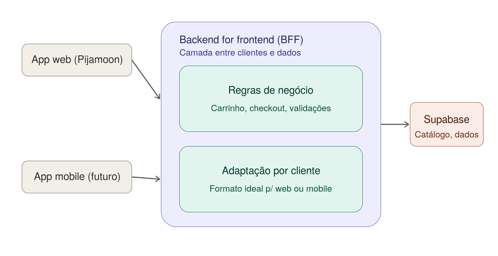

Como eu fiz a Pijamoon
Organização do código, headless commerce, AWS/cache, Lighthouse e onde entraria IA.
Onde entraria um BFF (bônus)
Hoje o app web fala direto com o Supabase. Se a Pijamoon ganhasse um app mobile, um BFF (Backend for Frontend) entraria no meio dos dois clientes — centralizando regras de negócio (carrinho, checkout, validações) e adaptando a resposta pro formato ideal de cada um, em vez de duplicar essa lógica no app web e no mobile.
